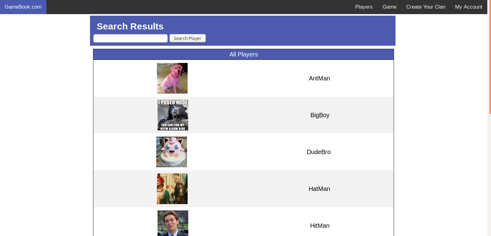

GameBook
(Fall 2018)
A social network for gamers to find other gamers with similar interests.
This project was for a databases class and was completed as a group project. I will only showcase my work on this page; this project was a group effort and credit is due to my collaborators for their work.
Github: jontran1
Github: nmaswood98
Github: bonliu
Technology
- MySQL
- HTML/CSS
- Javascript
- Node.js
- Express.js
- Handlebars
Demo
Home Page
This is the homepage where the user is first directed
Here, users can get started by clicking a game image or a username on the right
Game Page
Next is the games page. This page simply lists all the games in the database at the moment.
The user can click on any of the pages to be taken to the game's individual page.
Player Search Page
Lastly is the player search page. The page initially lists all players in the database, however entering a query into the search bar will result in applying a filter to the database query.
